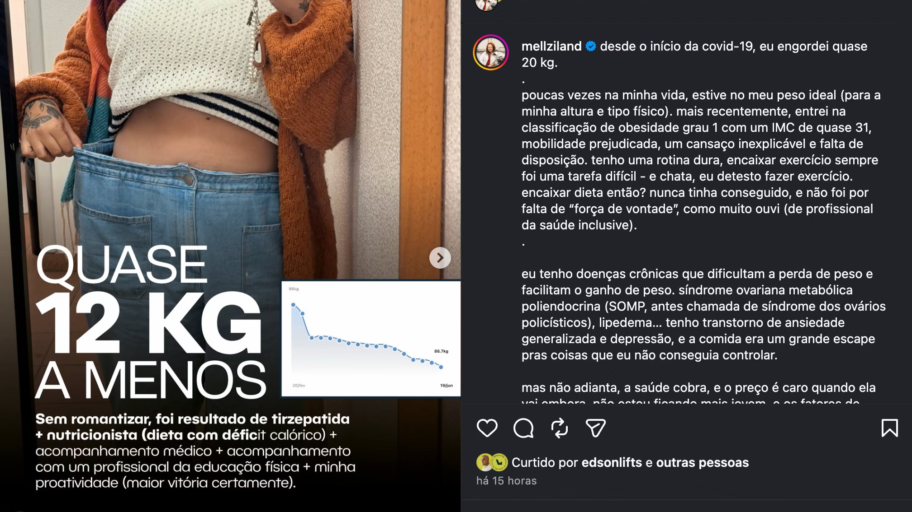
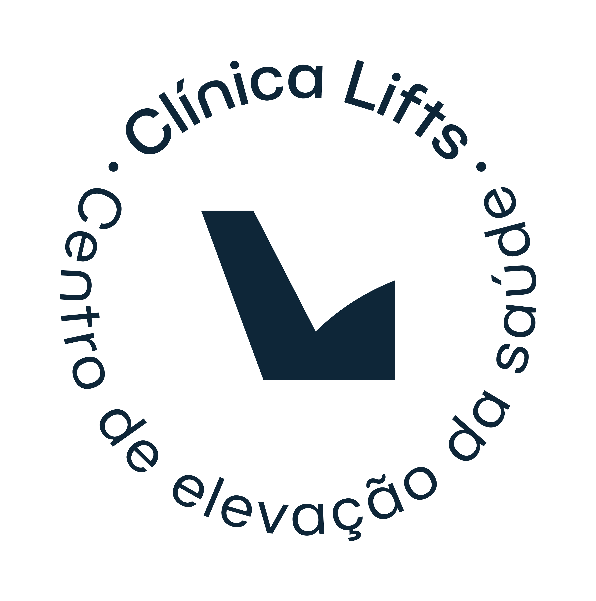
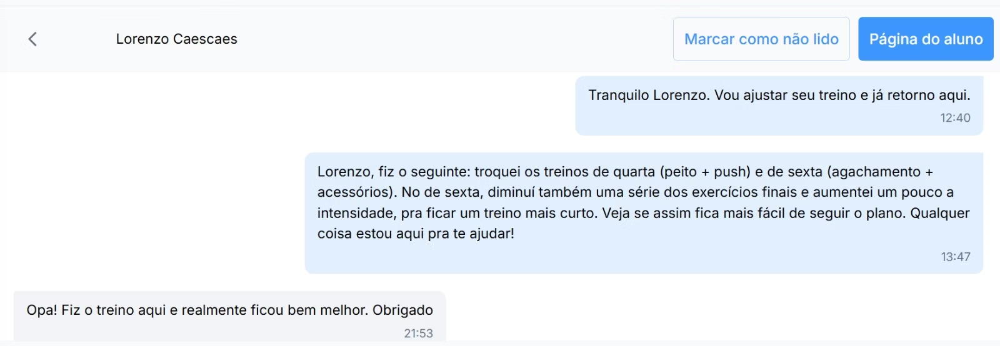

Sua primeira consulta pode ser agendada hoje. Médico, nutri e personal — juntos, no seu ritmo.
Garantia de um tratamento seguro. Verifica exames, histórico e necessidade de medicações.
Sem dieta genérica. Tudo é pensado para encaixar na sua rotina.
Alinhamento do treino de acordo com seu objetivo e condicionamento atual.
Garantia de um tratamento seguro. Verifica exames, histórico e necessidade de medicações.
Sem dieta genérica. Tudo é pensado para encaixar na sua rotina.
Alinhamento do treino de acordo com seu objetivo e condicionamento atual.
Acompanhamento e ajustes quando necessário. Sem efeito sanfona. Sem começar e parar.
… e sem acompanhamento.
Relato espontâneo de paciente em acompanhamento. Resultado com consulta, dieta e treino integrados.

das pessoas recuperam o peso perdido em até 2 anos sem acompanhamento estruturado.
Fonte: Reuters — "Menos de 2 anos após parar medicamentos para emagrecer, peso retorna ao original."
Estudo clínico comparou treino online guiado vs treino totalmente autodirigido, por 10 semanas.
Fonte: Gavanda et al., Journal of Strength and Conditioning Research, 2025.
Tudo isolado. Profissionais sem integração. Ajustes por tentativa e erro.

Quais profissionais você sente que hoje precisa?
Selecione acima para
só ver seu plano ideal
Dúvidas respondidas direto no chat, por gente de verdade.
*Até 48h em finais de semana.
